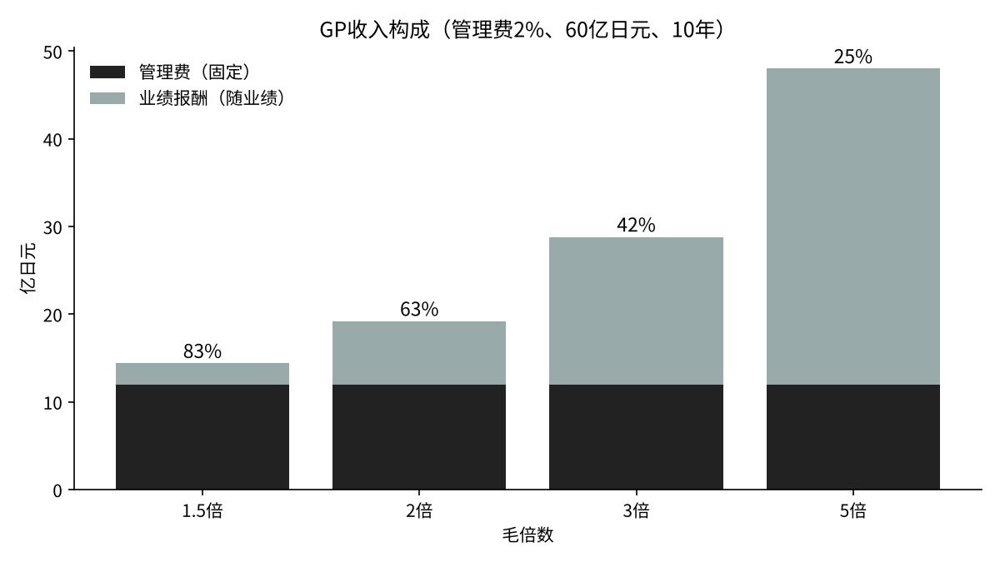
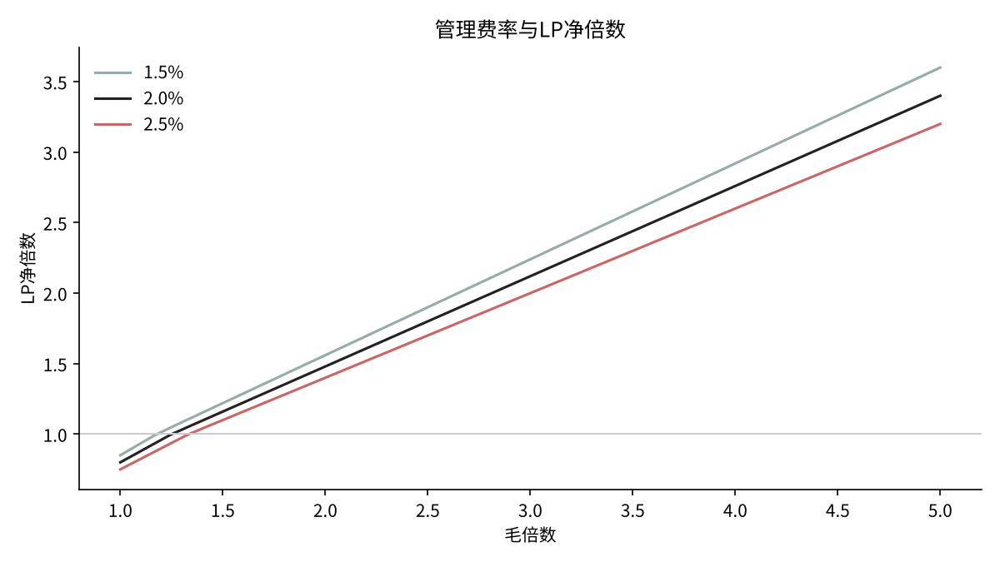

在60亿日元的VC基金里，管理费与业绩挂钩多少？——用ANOBAKA、日本经济产业省示范合伙协议和Metrick–Yasuda论文检验
日本专注种子期的风险投资机构ANOBAKA设立了规模约60亿日元（约3,773万美元）的第四期基金，并因加入了返还部分管理费的机制而受到关注。
VC基金的报酬通常被概括为“2%管理费、20%业绩报酬”，无论基金赚不赚钱，管理人都能拿到管理费。
本文的问题是：在一只60亿日元的基金里，管理人的收入有多少与业绩无关，出资人（LP）的到手收益又在多大程度上跟随业绩？
- 在60亿日元、10年、管理费2%的估算中，毛倍数2倍时GP收入约63%是与业绩无关的管理费。
- LP仅收回本金就需要毛倍数1.25倍。管理费率每提高0.5个百分点，用于投资的金额减少3亿日元。
- 返还管理费是让固定部分更贴近业绩的尝试，但最终决定到手收益的仍是选择管理人的能力。
问题与背景
先统一用语。日本的VC基金多以投资事业有限责任合伙（LPS）的形式设立。负责运营、承担无限责任的一方称为普通合伙人（GP），出资并承担有限责任的一方称为有限合伙人（LP）。
GP的报酬主要有两部分。管理费是按认缴出资额等乘以固定比例、每年收取的固定报酬。业绩报酬（附带权益）是按基金利润的一定比例收取、随业绩变动的报酬。
日本经济产业省于2025年6月公布了LPS合同范本《投资事业有限责任合伙合同示例及解说（令和7年版）》。范本没有规定报酬比例，由各基金在合同中自行约定。
美国的研究把“管理费2%、业绩报酬20%、GP出资1%”报告为典型结构，但实际合同差异很大。规模较大的基金有时会降低费率，也有基金在投资期结束后把计费基数从认缴额改为在投余额。
ANOBAKA以每家公司首次投资约1,000万至5,000万日元的种子期VC而闻名。种子期指公司刚成立、收入还很小的阶段。这一阶段的投资大多失败，据说少数巨大的成功决定了整只基金的成绩。
数据与方法
本文假设一只60亿日元、存续10年的基金，做一个简单计算。前提有四个。
第一，管理费按60亿日元认缴额每年收取，共10年。第二，扣除管理费后的余额全部用于投资。第三，业绩报酬为返还给LP的资金超过60亿日元部分的20%，不设优先回报（门槛）。第四，毛倍数表示投资额最终回收了几倍。
LP的净倍数＝（投资额×毛倍数−业绩报酬）÷60亿日元。业绩报酬＝0.2×（投资额×毛倍数−60亿日元），低于0时记为0。
例如管理费2%、毛倍数2倍时，48亿日元的投资变成96亿日元。超过60亿日元的36亿日元的20%即7.2亿日元为业绩报酬，LP到手88.8亿日元，即1.48倍。
这一计算忽略了资金进出的时间和存续期内费率的下调，因此结果只是把握方向的参考，不代表任何具体基金的业绩。

结果
管理费为每年2%时，10年共有12亿日元归GP，用于投资的是48亿日元。LP仅收回本金，就需要1.25倍的毛倍数。
| 毛倍数 | LP净倍数 | 业绩报酬 | 管理费（10年） | GP收入中固定部分的占比 |
|---|---|---|---|---|
| 1.5倍 | 1.16倍 | 2.4亿日元 | 12亿日元 | 83% |
| 2倍 | 1.48倍 | 7.2亿日元 | 12亿日元 | 63% |
| 3倍 | 2.12倍 | 16.8亿日元 | 12亿日元 | 42% |
| 5倍 | 3.40倍 | 36亿日元 | 12亿日元 | 25% |
在毛倍数2倍时，GP收到的19.2亿日元中有12亿日元、约63%是与业绩无关的管理费。毛倍数1.5倍时，这一占比升至83%。只有当业绩接近毛倍数3倍时，固定部分才会低于一半。

这与已有研究一致。Metrick与Yasuda（2010）估计，私募股权基金管理人的预期收入中约三分之二来自与业绩关联较弱的固定部分。
敏感性分析
把管理费率在1.5%、2%、2.5%三档之间变动，LP的到手收益变化如下。
| 年管理费率 | 用于投资的金额 | 收回本金所需毛倍数 | 毛倍数2倍时LP净倍数 | 毛倍数3倍时LP净倍数 |
|---|---|---|---|---|
| 1.5% | 51亿日元 | 1.18倍 | 1.56倍 | 2.24倍 |
| 2.0% | 48亿日元 | 1.25倍 | 1.48倍 | 2.12倍 |
| 2.5% | 45亿日元 | 1.33倍 | 1.40倍 | 2.00倍 |

费率每提高0.5个百分点，用于投资的金额减少3亿日元，毛倍数2倍时LP到手收益约下降0.08倍。费率差看似不大，但累积10年，会以数亿日元的规模影响LP的收益。
接着从两个方面改变报酬结构。第一种是前5年2%、后5年1%。此时管理费为9亿日元，LP在毛倍数2倍时为1.56倍、3倍时为2.24倍，与10年一直收1.5%的结果相同。
第二种是把业绩报酬率设为20%、25%、30%。管理费仍为2%时，毛倍数3倍下LP的到手收益依次降为2.12倍、2.05倍、1.98倍。业绩越好，业绩报酬率越关键；业绩越平平，管理费率越关键。
| 业绩报酬率 | 毛倍数2倍时LP净倍数 | 毛倍数3倍时LP净倍数 | 毛倍数5倍时LP净倍数 |
|---|---|---|---|
| 20% | 1.48倍 | 2.12倍 | 3.40倍 |
| 25% | 1.45倍 | 2.05倍 | 3.25倍 |
| 30% | 1.42倍 | 1.98倍 | 3.10倍 |
讨论
也有相反的看法：管理费是用来雇人寻找并扶持好公司的费用，削减过度反而可能拖累业绩。Robinson与Sensoy报告称，没有发现报酬越高的基金扣费后业绩越差的证据。
VC的回报还高度依赖时期。Harris、Jenkinson与Kaplan（2014）显示，美国VC基金在1990年代跑赢股市，在2000年代跑输。Harris、Jenkinson、Kaplan与Stucke（2023）报告，在VC领域，同一管理人的业绩往往会延续到下一只基金。选择管理人，可能比费率更重要。
这也是LP长期接受“2%与20%”结构的原因。头部管理人的基金供不应求，压低费率的谈判空间很小。一些LP更在意能否拿到额度，而不是更低的费率。
报酬的轻重也取决于出资方是谁。Sorensen、Wang与Yang指出，管理费、业绩报酬和流动性差对LP都是不小的成本，GP必须创造足够的超额回报才能弥补。想卖时卖不掉的资金，除了看得见的报酬，还有看不见的成本。
本文计算有三点局限：忽略资金进出时间；基准情形未设门槛和费率下调；日本VC基金报酬与业绩的公开数据很少。
检验答案的标准，是有管理费返还机制的基金与没有的基金在扣费后业绩上的差距。如果返还机制在不降低业绩的情况下提高了LP收益，结论就会变为“固定报酬可以降低”。
结论
在60亿日元、10年、管理费2%的简单情形下，直到业绩接近毛倍数3倍之前，GP收入的大半都与业绩无关。LP仅收回本金就需要1.25倍的毛倍数。
管理费返还机制可以理解为让这部分固定收入更贴近业绩的尝试。但降低报酬不等于业绩会提高，最终还是回到选择管理人的能力上。
出资方签约前可以聚焦三个数字：管理费率与期限、收回本金所需的毛倍数，以及管理人以往基金的扣费后业绩。
我是这样看的
我在日本以个人身份直接投资了约10家初创公司，其中约9家失败。开始之前，我也考虑过成为VC基金的LP，但听说单笔门槛约5,000万日元（约31.4万美元）后放弃了。
做完这次计算，我觉得当时除了门槛大小，还应该看看每年的管理费在10年里累积起来有多重。现在我从上市公司中，选择自己能写出持有理由的公司。
上市股票没有管理费，每天都有价格，想卖的那天就能卖。相应地，像创业初期公司那样的巨大倍数更难实现。我认为上市之后，仍有公司能在10年里成长10倍，所以把资金放在那里。
如果现在有VC基金邀请我，我不会加入。我无法把基金里的内容判断到与那笔门槛相称的程度。
汇率：1 USD = 159.01 JPY / 1 USD = 6.7128 CNY（截至2026年11月24日，人民币为11月19日中间价）
来源
- 日本经济产业省《投资事业有限责任合伙合同示例及解说（令和7年版）》2025年6月 https://www.meti.go.jp/policy/economy/keiei_innovation/keizaihousei/pdf/00_model_lpa_with_commentary_2025.pdf
- Metrick, A. and Yasuda, A.「The Economics of Private Equity Funds」Review of Financial Studies 23(6), 2010（工作论文版） https://rodneywhitecenter.wharton.upenn.edu/wp-content/uploads/2014/04/0717.pdf
- Robinson, D. and Sensoy, B.「Do Private Equity Fund Managers Earn Their Fees?」NBER Working Paper 17942 https://www.nber.org/papers/w17942.pdf
- Harris, R., Jenkinson, T. and Kaplan, S.「Private Equity Performance: What Do We Know?」Journal of Finance 69(5), 2014 https://www.nber.org/papers/w17874
- Harris, R., Jenkinson, T., Kaplan, S. and Stucke, R.「Has Persistence Persisted in Private Equity?」Journal of Corporate Finance 81, 2023 https://ora.ox.ac.uk/objects/uuid:af763da4-c1af-419f-8c86-9004859e92c4/files/r1831ck692
- Sorensen, M., Wang, N. and Yang, J.「Valuing Private Equity」NBER Working Paper 19612 https://www.nber.org/papers/w19612.pdf
图表与插图由YUKI CAPITAL制作
我在X上记录每天的数字与判断。